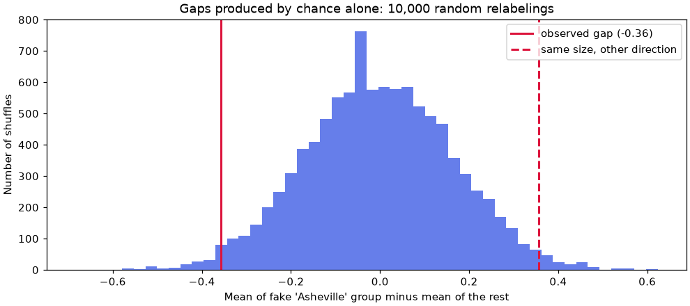
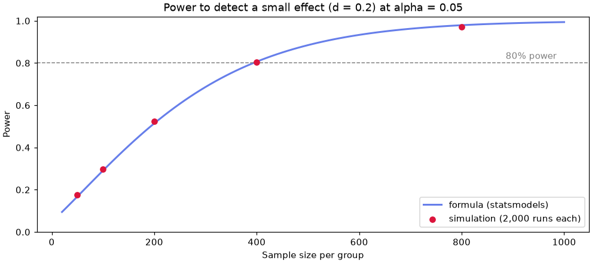

🔬 Lesson 4.5: Hypothesis Testing
Learn to ask "could this difference be nothing but chance?" and to answer it honestly, with a test, an effect size and a confidence interval.
🎯 Learning Objectives
By the end of this lesson, you will be able to:
- Explain the logic of a hypothesis test in plain words, and say what a p-value is and what it is not
- Build a permutation test by simulation and match it to SciPy's ready-made tests
- Choose and run a one-sample, Welch two-sample or paired t-test, a chi-square test, or a rank-based test for the data in front of you
- Report every test with an effect size and a confidence interval, and check its assumptions on the data
- Describe Type I and Type II errors and power, and correct for multiple comparisons
In This Lesson
⚖️ The Logic of a Test
Every summary you have computed in this module came from a sample: the customers who happened to answer the survey, the days that happened to be in the file. Draw a different sample and the numbers shift a little. So whenever two groups differ, there is a question underneath: is this a real difference, or the ordinary wobble of sampling? A hypothesis test is a disciplined way to answer that one question.
💡 Mental Model: The Courtroom
A court starts from "innocent until proven guilty". It does not ask the defendant to prove innocence. It asks whether the evidence would be surprising if the defendant were innocent. If it would be very surprising, the court rejects innocence. If not, the verdict is "not guilty", which is not the same as "proven innocent".
A hypothesis test works the same way. The starting assumption, called the null hypothesis, is "nothing is going on: any difference is chance". You then ask how surprising your data would be if that were true.
Here is the question for this lesson. Pinecrest's survey asked customers "How likely are you to recommend us?" on a scale from 0 to 10. Someone at head office noticed that shoppers at the Asheville store gave a lower average than shoppers at the other three stores. Before anyone schedules a meeting about Asheville, check whether that gap could be luck.
import numpy as np
import pandas as pd
import matplotlib.pyplot as plt
from scipy import stats
survey = pd.read_csv("data/survey.csv")
in_store = survey[survey["store"] != "Online"]
asheville = in_store.loc[in_store["store"] == "Asheville", "recommend"].dropna()
others = in_store.loc[in_store["store"] != "Asheville", "recommend"].dropna()
print(f"Asheville n = {len(asheville)} mean = {asheville.mean():.2f} sd = {asheville.std():.2f}")
print(f"Other stores n = {len(others)} mean = {others.mean():.2f} sd = {others.std():.2f}")
observed = asheville.mean() - others.mean()
print(f"Observed difference: {observed:.3f}")Output
Asheville n = 197 mean = 6.98 sd = 2.05
Other stores n = 752 mean = 7.34 sd = 2.04
Observed difference: -0.357Asheville's 197 respondents average 6.98 and the 752 respondents from the other stores average 7.34: a gap of about 0.36 points on an eleven-point scale, with individual answers spread about 2 points either side of the mean. Is 0.36 a lot? Looking at it will not tell you. You need to know how big a gap chance alone tends to produce with groups of this size.
🔀 A Test You Can Build Yourself
You can find out what chance alone produces with nothing more than the NumPy you already know. The idea: if the store a person shops at has nothing to do with their score, then the "Asheville" label is just a sticker that could have landed on anyone. So peel all 949 stickers off, shuffle them, stick them back on at random, and measure the gap between the fake "Asheville" group and the rest. Do that thousands of times and you have a picture of the gaps that pure chance creates. This is called a permutation test. If it feels familiar, it should: you built one by hand in an exercise of Lesson 1.4. This time the logic behind it gets a proper explanation.
rng = np.random.default_rng(42)
pooled = np.concatenate([asheville, others]) # all 949 scores, labels removed
n_ash = len(asheville)
shuffled_diffs = np.empty(10_000)
for i in range(10_000):
shuffled = rng.permutation(pooled) # deal the scores out at random
shuffled_diffs[i] = shuffled[:n_ash].mean() - shuffled[n_ash:].mean()
print(shuffled_diffs[:5].round(3))
print(f"Typical chance gap (standard deviation): {shuffled_diffs.std():.3f}")Output
[-0.03 0.034 -0.216 0.277 0.124]
Typical chance gap (standard deviation): 0.165Each of those 10,000 numbers is a gap between two groups that cannot truly differ, because you made the groups at random. They scatter around zero with a standard deviation of about 0.165. That number should sound familiar: it is a standard error, the idea from Lesson 4.3, this time for a difference between two means and measured by simulation instead of by formula. The real gap of 0.357 is a little more than two of those standard errors from zero. A picture makes the comparison plain.
fig, ax = plt.subplots(figsize=(9, 4), layout="constrained")
ax.hist(shuffled_diffs, bins=50, color="#667eea")
ax.axvline(observed, color="crimson", linewidth=2, label=f"observed gap ({observed:.2f})")
ax.axvline(-observed, color="crimson", linewidth=2, linestyle="--", label="same size, other direction")
ax.set_title("Gaps produced by chance alone: 10,000 random relabelings")
ax.set_xlabel("Mean of fake 'Asheville' group minus mean of the rest")
ax.set_ylabel("Number of shuffles")
ax.legend()
plt.show()
Now count. How often did shuffling produce a gap at least as large as the real one, in either direction?
as_extreme = np.abs(shuffled_diffs) >= abs(observed)
print(as_extreme.sum(), "of 10,000 shuffles gave a gap at least this large")
print(f"p-value = {as_extreme.mean():.3f}")Output
300 of 10,000 shuffles gave a gap at least this large
p-value = 0.030That fraction, 0.030, is a p-value. You did not look it up in a table or trust a formula. You built a world in which the store makes no difference, ran it 10,000 times, and found that only 3% of the runs looked as lopsided as the real survey.
✅ You Just Did the Whole Idea
Every test in this lesson follows the four steps you just took: (1) state what "nothing going on" means, (2) work out what results that would produce, (3) see where the real result falls, (4) report how rare it is. The named tests below are shortcuts that replace the 10,000 shuffles with mathematics. If a formula ever feels like magic, come back to the shuffle.
SciPy has the shuffle built in. You give it the groups and a function that computes your statistic.
def mean_diff(x, y):
return np.mean(x) - np.mean(y)
perm = stats.permutation_test((asheville, others), mean_diff,
n_resamples=9_999, rng=np.random.default_rng(42))
print(f"p-value = {perm.pvalue:.3f}")Output
p-value = 0.031Practically the same answer. (SciPy's shuffles are not the same 10,000 as yours, and it counts the real arrangement as one of the possible outcomes, so the third decimal can differ.)
🧩 Null, Alternative and the p-value
Now the vocabulary for what you just did.
| Term | Meaning | In the Asheville question |
|---|---|---|
| Null hypothesis (H0) | The "nothing going on" claim you assume in order to test it | Asheville shoppers and other store shoppers have the same mean score |
| Alternative hypothesis (H1) | What you conclude if the null does not hold up | The means differ (in either direction: a two-sided test) |
| Test statistic | One number that measures how far the data are from the null | The difference in means, −0.357 |
| p-value | The probability, if the null were true, of a test statistic at least as extreme as the one you got | 0.030 |
| Significance level (α) | The cutoff you choose before looking: reject the null when p is below it | 0.05, the common convention |
With p = 0.030 below α = 0.05, the result is called statistically significant, and you reject the null hypothesis. Had p come out above 0.05, the wording would be "fail to reject the null", the statistical version of "not guilty". It never becomes "accept the null": a small or noisy sample can easily miss a real difference.
What a p-value Is Not
The p-value is the most misread number in statistics, so it is worth being exact. It answers one narrow question: how often would chance alone give data like these? Everything in the table below is a different question.
| Tempting reading of p = 0.03 | Why it is wrong |
|---|---|
| "There is a 3% chance the null hypothesis is true." | The p-value is calculated assuming the null is true. It describes the data given the null, not the null given the data. |
| "There is a 97% chance Asheville really is worse." | Same mistake, turned around. A test does not give the probability that any hypothesis is true. |
| "The difference is large" or "important". | The p-value mixes the size of the effect with the size of the sample. A trivial gap gets a tiny p-value if the sample is big enough. |
| "If p were 0.20, the stores would be the same." | A large p-value means the data are compatible with no difference. They may be just as compatible with a real one. |
⚠️ 0.05 Is a Convention, Not a Law of Nature
p = 0.049 and p = 0.051 are almost identical evidence. Treat the p-value as a measure of how surprising the data are under the null, report the actual number, and never let a result's fate hang on which side of a line it fell. In this lesson a p-value never travels alone: it comes with an effect size (how big?) and a confidence interval (how sure?).
📏 t-Tests: Welch by Default
Shuffling works, but for a difference in means there is a classic shortcut. The t-test divides the observed difference by its standard error to get a t statistic ("how many standard errors from zero?") and reads the p-value from the t distribution you met in Lesson 4.3.
Two Independent Groups
There are two versions of the two-sample t-test. The original (Student's) assumes both groups have the same variance. Welch's t-test does not. When the variances really are equal, Welch gives nearly the same answer; when they are not, Student's can be badly wrong, especially with unequal group sizes. So use Welch unless you have a specific reason not to. In SciPy that means writing equal_var=False every time, because the default is True.
res = stats.ttest_ind(asheville, others, equal_var=False)
print(res)
ci = res.confidence_interval(confidence_level=0.95)
print(f"t = {res.statistic:.2f}, df = {res.df:.0f}, p = {res.pvalue:.3f}")
print(f"95% CI for the difference: {ci.low:.2f} to {ci.high:.2f}")Output
TtestResult(statistic=np.float64(-2.174641776852291), pvalue=np.float64(0.030425431046372332), df=np.float64(304.93011385641904))
t = -2.17, df = 305, p = 0.030
95% CI for the difference: -0.68 to -0.03The result object holds the statistic, the p-value and the degrees of freedom (its raw form shows NumPy's np.float64(...) wrappers, which is why the lesson formats numbers with f-strings). The p-value, 0.030, agrees with your shuffle. That is not a coincidence: both answer the same question, one by simulation and one by theory.
The confidence interval is the more useful half of the output. The data are consistent with Asheville being anywhere from 0.68 to 0.03 points lower. The interval does not include zero, which is the same fact as p < 0.05 seen from another side, and it tells you something the p-value cannot: the true gap might be meaningful, or it might be almost nothing.
Effect Size: How Big Is It?
For two means, the standard effect size is Cohen's d: the difference divided by the pooled standard deviation. It expresses the gap in units of "how much do individuals vary anyway", so it does not grow just because the sample did. SciPy does not ship one, and it is four lines:
def cohens_d(x, y):
"""Difference in means divided by the pooled standard deviation."""
nx, ny = len(x), len(y)
pooled_var = ((nx - 1) * np.var(x, ddof=1) + (ny - 1) * np.var(y, ddof=1)) / (nx + ny - 2)
return (np.mean(x) - np.mean(y)) / np.sqrt(pooled_var)
print(f"Cohen's d = {cohens_d(asheville, others):.2f}")Output
Cohen's d = -0.17A common rule of thumb calls |d| near 0.2 small, 0.5 medium and 0.8 large. At −0.17, this is a small effect: the two groups' answers overlap almost completely. Put the three numbers together and you have an honest sentence: "Asheville shoppers rated Pinecrest 0.36 points lower on average (95% CI 0.03 to 0.68 lower; Welch t-test p = 0.030; d = −0.17, a small effect)." That is evidence worth following up, and nowhere near proof of a crisis.
One Sample Against a Target
Sometimes there is only one group and a number to compare it with. Suppose Pinecrest's target for the average recommend score, across all customers, is 7.5. The one-sample t-test asks whether the sample mean is further from the target than chance would explain.
everyone = survey["recommend"].dropna()
res1 = stats.ttest_1samp(everyone, popmean=7.5)
ci1 = res1.confidence_interval()
d1 = (everyone.mean() - 7.5) / everyone.std()
print(f"n = {len(everyone)}, mean = {everyone.mean():.2f}, sd = {everyone.std():.2f}")
print(f"t = {res1.statistic:.2f}, p = {res1.pvalue:.4f}")
print(f"95% CI for the mean: {ci1.low:.2f} to {ci1.high:.2f}")
print(f"Effect size d = {d1:.2f}")Output
n = 1746, mean = 7.36, sd = 1.98
t = -2.99, p = 0.0028
95% CI for the mean: 7.27 to 7.45
Effect size d = -0.07Read this one slowly, because it is the opposite of the Asheville result. The p-value is much smaller (0.003), so the evidence that the true mean is below 7.5 is stronger. Yet the shortfall is 0.14 points, and d is −0.07: tiny. With 1,746 responses the interval is so narrow (7.27 to 7.45) that even a small miss is detectable.
💡 Statistical Significance Is Not Practical Significance
Statistically significant means "unlikely to be chance alone". Practically significant means "big enough to matter to someone". The first is a calculation; the second is a judgment that needs the effect size, the confidence interval and knowledge of the business. A manager would probably call 7.36 against a target of 7.5 "close", and they would be right.
Paired Measurements
The tests so far assume the two groups are independent: different people, unrelated to each other. Sometimes the data come in natural pairs instead: the same customers before and after, or two stores on the same days. Then a paired t-test is the right tool. It looks only at the difference within each pair.
Does the Bend store get more visitors than the Flagstaff store? Line the two up by date and try it both ways.
daily = pd.read_csv("data/daily_sales.csv", parse_dates=["date"])
visitors = daily.pivot(index="date", columns="store", values="visitors")
pair = visitors[["Bend", "Flagstaff"]].dropna() # days when both stores reported
print(len(pair), "days with both stores")
print(pair.mean().round(1))
wrong = stats.ttest_ind(pair["Bend"], pair["Flagstaff"], equal_var=False)
right = stats.ttest_rel(pair["Bend"], pair["Flagstaff"])
print(f"Treated as independent (Welch): p = {wrong.pvalue:.3f}")
print(f"Treated as pairs (paired t): p = {right.pvalue:.4f}")Output
722 days with both stores
store
Bend 335.2
Flagstaff 328.6
dtype: float64
Treated as independent (Welch): p = 0.274
Treated as pairs (paired t): p = 0.0024Same numbers, very different verdicts. Why? Store traffic swings enormously from a slow Tuesday in February to a Saturday in August, and it swings the same way in both stores. The independent test sees all of that swing as noise, and a 6.5-visitor gap drowns in it. Pairing by date subtracts the shared swing out.
diff = pair["Bend"] - pair["Flagstaff"]
ci_p = right.confidence_interval()
print(f"Correlation between the two stores' daily visitors: {pair['Bend'].corr(pair['Flagstaff']):.2f}")
print(f"Mean daily difference: {diff.mean():.1f} visitors (sd of differences {diff.std():.1f})")
print(f"95% CI: {ci_p.low:.1f} to {ci_p.high:.1f}")
print(f"Effect size (mean difference / sd of differences): {diff.mean() / diff.std():.2f}")Output
Correlation between the two stores' daily visitors: 0.87
Mean daily difference: 6.5 visitors (sd of differences 57.6)
95% CI: 2.3 to 10.7
Effect size (mean difference / sd of differences): 0.11Bend averages about 6.5 more visitors a day than Flagstaff (95% CI 2.3 to 10.7), roughly 2% of a typical day. It is real, and it is small. A paired t-test is nothing more than a one-sample t-test on the differences against zero, and its effect size is the mean difference divided by the standard deviation of the differences.
⚠️ An Honest Caveat About Days
t-tests assume the observations (here, the daily differences) are independent of each other. Consecutive days are not quite: a busy week is busy all week. That kind of dependence makes p-values look somewhat better than they deserve, so treat a daily-data p-value as approximate. The survey responses, one per customer, do not have this problem.
🗂️ Chi-Square for Categories
Means are for numbers. When both variables are categories, you compare counts. Are online orders returned more often than store orders? Start with the table of counts, which pd.crosstab builds.
orders = pd.read_csv("data/orders.csv")
orders["returned"] = orders["status"] == "returned"
table = pd.crosstab(orders["channel"], orders["returned"])
print(table)
print()
print(pd.crosstab(orders["channel"], orders["returned"], normalize="index").round(3))Output
returned False True
channel
online 11964 890
store 7195 253
returned False True
channel
online 0.931 0.069
store 0.966 0.0346.9% of online orders came back, against 3.4% of store orders. The chi-square test of independence takes the null hypothesis "channel and returning are unrelated", works out the counts you would expect in each cell if that were true, and measures how far the real counts are from them.
chi = stats.chi2_contingency(table)
print(f"chi-square = {chi.statistic:.1f}, df = {chi.dof}, p = {chi.pvalue:.1e}")
print("Expected counts if channel made no difference:")
print(chi.expected_freq.round(1))Output
chi-square = 109.7, df = 1, p = 1.1e-25
Expected counts if channel made no difference:
[[12130.3 723.7]
[ 7028.7 419.3]]If channel did not matter, you would expect about 724 online returns. There were 890. A p-value of about 10−25 says chance is not a believable explanation. The expected counts also serve as the test's main assumption check: the chi-square approximation is trustworthy when every expected count is at least about 5, and the smallest here is 419.
The usual effect size for a table is Cramér's V, which runs from 0 (no association) to 1 (perfect association).
from scipy.stats.contingency import association
rates = orders.groupby("channel")["returned"].mean()
print(f"Cramer's V = {association(table, method='cramer'):.3f}")
print(f"Return rates: online {rates['online']:.1%}, store {rates['store']:.1%}")
print(f"Online orders are returned {rates['online'] / rates['store']:.1f} times as often")Output
Cramer's V = 0.074
Return rates: online 6.9%, store 3.4%
Online orders are returned 2.0 times as oftenHere is a case where one effect size is not enough. V is only 0.07, which sounds negligible, because most orders in both channels are kept. Yet the return rate doubles, and returns cost money. For a two-by-two table, the two rates and their ratio usually communicate the effect better than V does. Report the one your reader can act on.
A Test That Finds Nothing
Tests do not always find something, and that is useful too. Is a customer's loyalty tier related to how they first found Pinecrest?
customers = pd.read_csv("data/customers.csv")
tier_table = pd.crosstab(customers["acquisition_channel"], customers["loyalty_tier"])
chi2 = stats.chi2_contingency(tier_table)
print(tier_table)
print(f"chi-square = {chi2.statistic:.2f}, df = {chi2.dof}, p = {chi2.pvalue:.3f}")
print(f"Smallest expected count: {chi2.expected_freq.min():.1f}")
print(f"Cramer's V = {association(tier_table, method='cramer'):.3f}")Output
loyalty_tier Basic Gold Silver
acquisition_channel
in_store 590 136 268
organic 878 224 415
paid_search 581 142 273
referral 310 105 146
social 463 127 192
chi-square = 10.55, df = 8, p = 0.228
Smallest expected count: 84.9
Cramer's V = 0.033p = 0.23: differences this size between channels turn up by chance about a quarter of the time. You fail to reject the null. With 4,850 customers and V = 0.03, you can add that any association is weak at most. What you cannot say is that the test proved there is none.
🪜 Ratings and Ranks: Mann-Whitney
A t-test compares means, and a mean assumes the distance from 1 to 2 equals the distance from 4 to 5. For a 1-to-5 satisfaction rating that is doubtful: these are ordered categories, as Lesson 4.2 discussed. A nonparametric test avoids the issue by working with ranks instead of the values themselves. The Mann-Whitney U test is the rank-based counterpart of the two-sample t-test. Its null hypothesis is that both groups come from the same distribution, and it is sensitive to one group tending to give higher values than the other.
The survey asked store shoppers to rate the staff. Compare Asheville with the other stores.
staff_ash = in_store.loc[in_store["store"] == "Asheville", "sat_staff"].dropna()
staff_oth = in_store.loc[in_store["store"] != "Asheville", "sat_staff"].dropna()
is_ash = (in_store["store"] == "Asheville").rename("asheville")
print(pd.crosstab(is_ash, in_store["sat_staff"], normalize="index").round(2))
mw = stats.mannwhitneyu(staff_ash, staff_oth)
print(f"\nn = {len(staff_ash)} and {len(staff_oth)}, U = {mw.statistic:.0f}, p = {mw.pvalue:.1e}")
print(f"Probability a random Asheville rating beats a random other-store rating: "
f"{mw.statistic / (len(staff_ash) * len(staff_oth)):.2f}")Output
sat_staff 1.0 2.0 3.0 4.0 5.0
asheville
False 0.00 0.03 0.20 0.40 0.37
True 0.03 0.11 0.28 0.36 0.21
n = 193 and 754, U = 53778, p = 3.0e-09
Probability a random Asheville rating beats a random other-store rating: 0.37Look at the table before the test. At the other stores 37% of shoppers gave the staff a 5; in Asheville 21% did, and the share giving a 1 or 2 is four times higher (14% against 3%). The test agrees that this is no accident: p is about 3 in a billion.
The effect size comes straight from U. Dividing U by the number of possible pairs (193 × 754) gives the probability of superiority: pick one Asheville shopper and one shopper from another store at random, and the chance that the Asheville rating is the higher one (counting ties as half) is 0.37. With no difference it would be 0.50. That is a moderate, clearly visible shift, much stronger than the recommend-score gap you started with.
💡 Which Nonparametric Test?
Two independent groups: stats.mannwhitneyu. Paired measurements: stats.wilcoxon (the Wilcoxon signed-rank test). Three or more groups: stats.kruskal. Reach for them with ordinal ratings, with small samples that are strongly skewed, or when a few extreme values would dominate a mean. The cost is that they answer a question about ranks, so "the mean went up by $4" is not something they can tell you.
🎲 Two Ways to Be Wrong, and Power
A test gives a verdict from a sample, so it can be wrong in two different ways, just as a court can.
| In truth, no difference | In truth, a real difference | |
|---|---|---|
| Test says "significant" | Type I error (false alarm). Its rate is α, which you choose. | Correct. The chance of this is the test's power. |
| Test says "not significant" | Correct. | Type II error (a miss). Its rate is β = 1 − power. |
You can watch a Type I error rate happen. Draw two groups from the same pool of real scores, so the null hypothesis is true by construction, test them, and repeat.
rng = np.random.default_rng(42)
pool = in_store["recommend"].dropna().to_numpy()
p_null = np.array([
stats.ttest_ind(rng.choice(pool, 197), rng.choice(pool, 752), equal_var=False).pvalue
for _ in range(2_000)
])
print(f"{(p_null < 0.05).sum()} of 2,000 tests were 'significant': {(p_null < 0.05).mean():.1%}")Output
107 of 2,000 tests were 'significant': 5.3%About 5%, exactly as α = 0.05 promises: when nothing is going on, one test in twenty still rings the alarm. This run is also an assumption check. Recommend scores are whole numbers from 0 to 10 and skewed toward the high end, nothing like a bell curve, and the t-test still holds its error rate, because with samples this large the means are close to normal (the Central Limit Theorem from Lesson 4.3).
Power: The Chance of Catching a Real Effect
Power is the probability that a test detects an effect that truly exists. It rises with the sample size and with the size of the effect, and falls when the data are noisier. Simulate it: make the difference real (means of 7.0 and 7.4 with a standard deviation of 2, so d = 0.2) and see how often samples of different sizes notice.
from statsmodels.stats.power import TTestIndPower
rng = np.random.default_rng(42)
sizes = [50, 100, 200, 400, 800]
sim_power = []
for n in sizes:
p_alt = np.array([
stats.ttest_ind(rng.normal(7.0, 2, n), rng.normal(7.4, 2, n), equal_var=False).pvalue
for _ in range(2_000)
])
sim_power.append((p_alt < 0.05).mean())
theory = [TTestIndPower().power(effect_size=0.2, nobs1=n, alpha=0.05) for n in sizes]
for n, s, t in zip(sizes, sim_power, theory):
print(f"n = {n:>3} per group simulated power {s:.2f} formula {t:.2f}")Output
n = 50 per group simulated power 0.17 formula 0.17
n = 100 per group simulated power 0.30 formula 0.29
n = 200 per group simulated power 0.53 formula 0.51
n = 400 per group simulated power 0.81 formula 0.81
n = 800 per group simulated power 0.97 formula 0.98fig, ax = plt.subplots(figsize=(9, 4), layout="constrained")
grid = np.arange(20, 1001, 10)
ax.plot(grid, [TTestIndPower().power(effect_size=0.2, nobs1=n, alpha=0.05) for n in grid],
color="#667eea", linewidth=2, label="formula (statsmodels)")
ax.scatter(sizes, sim_power, color="crimson", zorder=3, label="simulation (2,000 runs each)")
ax.axhline(0.8, color="gray", linestyle="--", linewidth=1)
ax.text(985, 0.82, "80% power", ha="right", color="gray")
ax.set_title("Power to detect a small effect (d = 0.2) at alpha = 0.05")
ax.set_xlabel("Sample size per group")
ax.set_ylabel("Power")
ax.set_ylim(0, 1.02)
ax.legend(loc="lower right")
plt.show()
With 50 per group the test catches this real effect only about 17% of the time. A "not significant" result from a study that small says almost nothing. This is why sample size is planned before collecting data. By convention, studies aim for 80% power, and statsmodels can solve for the sample size that gets you there.
power_calc = TTestIndPower()
print(f"Per group for d = 0.2: {power_calc.solve_power(effect_size=0.2, alpha=0.05, power=0.8):.0f}")
print(f"Per group for d = 0.5: {power_calc.solve_power(effect_size=0.5, alpha=0.05, power=0.8):.0f}")
print(f"Power of the survey (197 vs 752) for d = 0.2: "
f"{power_calc.power(effect_size=0.2, nobs1=197, ratio=752 / 197, alpha=0.05):.2f}")Output
Per group for d = 0.2: 393
Per group for d = 0.5: 64
Power of the survey (197 vs 752) for d = 0.2: 0.70The required sample grows with one over the effect size squared: an effect 2.5 times smaller needs about six times as many people. And the Asheville comparison had about a 70% chance of detecting a small effect if one exists: decent, not generous. You will use these power functions again in the next lesson to size an experiment.
🎰 Multiple Comparisons
One test at α = 0.05 has a 5% false-alarm rate. Twenty tests do not. If you test enough things, something will come up "significant" by luck, the same way that buying enough lottery tickets eventually wins something.
for k in [1, 5, 20, 30]:
print(f"{k:>2} tests of true nulls: chance of at least one false alarm = {1 - 0.95 ** k:.0%}")Output
1 tests of true nulls: chance of at least one false alarm = 5%
5 tests of true nulls: chance of at least one false alarm = 23%
20 tests of true nulls: chance of at least one false alarm = 64%
30 tests of true nulls: chance of at least one false alarm = 79%Here is a realistic way to run thirty tests without meaning to. The survey has six age groups and five satisfaction items. "Let's see if any age group is unhappy about anything" means comparing each group with everyone else on each item: 6 × 5 = 30 Mann-Whitney tests.
from statsmodels.stats.multitest import multipletests
items = ["sat_overall", "sat_selection", "sat_price", "sat_staff", "sat_website"]
rows = []
for group in sorted(survey["age_group"].unique()):
in_group = survey["age_group"] == group
for item in items:
x = survey.loc[in_group, item].dropna()
y = survey.loc[~in_group, item].dropna()
rows.append({"age_group": group, "item": item,
"diff": x.mean() - y.mean(),
"p": stats.mannwhitneyu(x, y).pvalue})
scan = pd.DataFrame(rows)
scan["p_holm"] = multipletests(scan["p"], alpha=0.05, method="holm")[1]
print(f"Tests run: {len(scan)}")
print(f"p below 0.05 before correction: {(scan['p'] < 0.05).sum()}")
print(f"p below 0.05 after Holm correction: {(scan['p_holm'] < 0.05).sum()}")
print(scan.sort_values("p").head(7).round(4).to_string(index=False))Output
Tests run: 30
p below 0.05 before correction: 6
p below 0.05 after Holm correction: 3
age_group item diff p p_holm
65+ sat_website -0.6352 0.0000 0.0000
18-24 sat_price -0.5678 0.0000 0.0000
55-64 sat_website 0.2119 0.0009 0.0257
55-64 sat_price 0.1594 0.0026 0.0691
35-44 sat_website 0.1563 0.0206 0.5349
45-54 sat_website 0.1473 0.0233 0.5823
25-34 sat_website 0.1513 0.0513 1.0000Six of the thirty tests are below 0.05. With thirty tests you would expect one or two false alarms even if age had no effect on anything, so some of those six deserve suspicion. A multiple-comparison correction raises the bar. The simplest, Bonferroni, multiplies every p-value by the number of tests. Holm's method controls the same thing (the chance of even one false alarm across the whole family) and is never less powerful, so prefer it. multipletests returns the adjusted p-values as its second item.
Three results survive, and two are large and specific: customers of 65 and over rate the website 0.64 points lower than everyone else, and 18 to 24 year olds rate prices 0.57 points lower. Those are findings. The third is a caution about the design of the scan itself: 55 to 64 year olds appear to like the website more, but that is mostly because "everyone else" includes the unhappy 65+ group, which drags the comparison group down.
⚠️ Count Every Test You Ran, Not Only the Ones You Report
The Asheville recommend-score result, p = 0.030, was presented as a single planned question. If it had instead been the best of twenty store-by-item comparisons, it would not survive a correction, and reporting it alone would be misleading. Trying many tests and showing only the winners is called p-hacking. The honest habits are simple: decide your main question before you look, say how many comparisons you made, and label anything you found by scanning as exploratory, to be confirmed on new data.
🧭 Choosing a Test and Checking It
The test follows from two facts about your data: what kind of outcome you measured, and how the groups relate to each other.
Every test rests on assumptions. Checking them is part of running the test, and it is done on the data, as you did above.
| Test | SciPy call | Assumes | Effect size to report |
|---|---|---|---|
| One-sample t | stats.ttest_1samp(x, popmean=m) | Independent observations; sample mean roughly normal (fine for large n) | (mean − target) / sd |
| Welch t | stats.ttest_ind(x, y, equal_var=False) | Two independent groups; means roughly normal. Equal variances not required | Cohen's d and the difference with its CI |
| Paired t | stats.ttest_rel(x, y) | Pairs line up one to one; the differences are independent of each other | Mean difference / sd of differences |
| Chi-square | stats.chi2_contingency(table) | Each unit counted once; expected counts of about 5 or more | The rates themselves; Cramér's V |
| Mann-Whitney U | stats.mannwhitneyu(x, y) | Two independent groups; values can be ordered | U / (n1 × n2) |
| Permutation | stats.permutation_test(...) | Labels are exchangeable if the null is true (independent units) | Whatever statistic you shuffled |
Notice what appears in every row: independence. No test can repair data in which one customer was counted five times or one busy week was counted as seven separate proofs. Normality, by contrast, matters less than its reputation suggests once samples are in the hundreds. A quick look at shape and size is enough to decide.
print(f"Skewness of recommend: Asheville {asheville.skew():.2f}, others {others.skew():.2f}")
print(f"Group sizes: {len(asheville)} and {len(others)}")
print(f"Standard deviations: {asheville.std():.2f} and {others.std():.2f}")Output
Skewness of recommend: Asheville -0.43, others -0.61
Group sizes: 197 and 752
Standard deviations: 2.05 and 2.04Mild left skew, large groups, nearly equal spread, one response per customer: the Welch test is on solid ground here, and the permutation test, which needs none of the normality reasoning, gave the same p-value. When two sound methods agree, you can stop worrying about which one to trust.
📝 A Template for Reporting Any Test
What was compared (groups and sizes) · the estimate (difference, rate or ratio) · its 95% confidence interval · the test and p-value · the effect size in plain words · caveats (how the data were collected, how many tests were run).
⚠️ Common Mistakes
Statistical mistakes are sneakier than coding mistakes, because most of them run without an error. Each one below is something working analysts do. Spotting them in your own work is a skill you are building, and "not yet" is a fine place to be.
1. Missing Values Turn the Result into nan
raw = in_store.loc[in_store["store"] == "Asheville", "recommend"] # dropna() forgotten
print(stats.ttest_ind(raw, others, equal_var=False).pvalue)Output
nanWhat it means: SciPy's tests do not skip missing values the way pandas' .mean() does. One nan in the input makes the answer nan. Fix: call .dropna() first, or pass nan_policy="omit".
print(round(stats.ttest_ind(raw, others, equal_var=False, nan_policy="omit").pvalue, 3))Output
0.032. A Paired Test on Groups That Do Not Line Up
stats.ttest_rel(visitors["Bend"].dropna(), visitors["Flagstaff"].dropna())Error
ValueError: Array shapes are incompatible for broadcasting.What it means: dropping missing days separately left 724 Bend values and 725 Flagstaff values, so there is no way to match them one to one. Worse, if the lengths had happened to be equal, SciPy would have paired the wrong days without complaint. Fix: put the pairs in one table and drop incomplete rows, as in visitors[["Bend", "Flagstaff"]].dropna().
3. Giving chi2_contingency the Raw Columns
stats.chi2_contingency([orders["channel"], orders["returned"]])Error
TypeError: '<' not supported between instances of 'str' and 'int'What it means: the function expects a table of counts and tried to treat the text labels as numbers. Fix: build the table first with pd.crosstab(orders["channel"], orders["returned"]). Be especially careful with numeric columns: two columns of numbers can be accepted as if they were a table of counts and give a meaningless answer.
4. Reading "Not Significant" as "No Difference"
The staff-satisfaction gap in Asheville is real: the full data gave p near 3 in a billion. Watch what a small sample of the same data says.
small = in_store.dropna(subset=["sat_staff"]).sample(60, random_state=1)
s_ash = small.loc[small["store"] == "Asheville", "sat_staff"]
s_oth = small.loc[small["store"] != "Asheville", "sat_staff"]
print(len(s_ash), "Asheville and", len(s_oth), "other responses")
print(f"p = {stats.mannwhitneyu(s_ash, s_oth).pvalue:.2f}")Output
10 Asheville and 50 other responses
p = 0.82What it means: with ten Asheville responses the test has very little power, so it missed a difference you know exists (a Type II error). Fix: never write "there is no difference" from a large p-value. Write "we could not detect one", and give the confidence interval so readers can see how much the data leave open.
5. Forgetting equal_var=False
stats.ttest_ind(x, y) runs Student's test, which assumes equal variances. No error, no warning. When group sizes and spreads both differ, its p-value can be too small or too large. Fix: type equal_var=False as a habit.
6. Choosing the Hypothesis After Seeing the Data
SciPy's tests accept alternative="less" or "greater" for a one-sided test, which halves the p-value when the data lean the way you named. Picking the direction after looking at the means turns p = 0.08 into p = 0.04 by sleight of hand. Fix: use the default two-sided test unless a direction was fixed in advance for a reason you could defend to a skeptic.
🛠️ Project: Does Rain Keep Shoppers Away?
Store managers at Pinecrest are sure that rainy days are slow days. You have door-counter data and weather for every store, so you can test the belief, measure the size of the effect, and say how far the conclusion can be trusted. Work in a new notebook called lesson_4_5_project. Allow about 40 minutes.
🛠️ Step 1: Join sales to weather and flag rainy days (5 min)
The two files share a date, but the store column is called store in one and city in the other (Lesson 2.5). Call a day rainy when at least 0.10 inches fell.
import numpy as np
import pandas as pd
from scipy import stats
from statsmodels.stats.multitest import multipletests
daily = pd.read_csv("data/daily_sales.csv", parse_dates=["date"])
weather = pd.read_csv("data/store_weather.csv", parse_dates=["date"])
days = daily.merge(weather, left_on=["date", "store"], right_on=["date", "city"], how="left")
days["rainy"] = days["precip_in"] >= 0.10
print(days.shape, "rows with no weather match:", days["precip_in"].isna().sum())
print(days.groupby("store")["rainy"].mean().round(2))Output
(2903, 13) rows with no weather match: 0
store
Asheville 0.24
Bend 0.07
Boise 0.09
Flagstaff 0.14
Name: rainy, dtype: float64Every store-day found its weather. Asheville is rainy on about one day in four, Bend on one in fourteen.
🛠️ Step 2: Look before you test, and state the hypotheses (5 min)
Summarize visitors by store and rain. Then write the hypotheses down, in a comment, before running any test.
print(days.groupby(["store", "rainy"])["visitors"].agg(["count", "mean", "std"]).round(1))
# H0: for a given store, mean visitors are the same on rainy and dry days.
# H1: the means differ (two-sided). alpha = 0.05, Welch t-test, one test per store.Output
count mean std
store rainy
Asheville False 555 286.8 91.1
True 172 236.4 71.6
Bend False 674 339.5 109.3
True 50 272.7 86.1
Boise False 659 497.4 160.2
True 68 366.7 126.8
Flagstaff False 626 338.3 118.8
True 99 266.3 85.5Rainy days are slower in all four stores, and the dry-day groups have the larger spread. Unequal sizes and unequal spreads: exactly the case Welch's test is for.
🛠️ Step 3: Test one store completely (5 min)
Do Asheville first: the test, the confidence interval and the effect size. Paste in cohens_d from the lesson.
def cohens_d(x, y):
nx, ny = len(x), len(y)
pooled_var = ((nx - 1) * np.var(x, ddof=1) + (ny - 1) * np.var(y, ddof=1)) / (nx + ny - 2)
return (np.mean(x) - np.mean(y)) / np.sqrt(pooled_var)
ash = days[days["store"] == "Asheville"]
wet = ash.loc[ash["rainy"], "visitors"]
dry = ash.loc[~ash["rainy"], "visitors"]
res = stats.ttest_ind(wet, dry, equal_var=False)
ci = res.confidence_interval()
print(f"Rainy {wet.mean():.1f} vs dry {dry.mean():.1f}: difference {wet.mean() - dry.mean():.1f}")
print(f"95% CI {ci.low:.1f} to {ci.high:.1f}, t = {res.statistic:.2f}, p = {res.pvalue:.1e}")
print(f"Cohen's d = {cohens_d(wet, dry):.2f}, relative change {wet.mean() / dry.mean() - 1:.1%}")Output
Rainy 236.4 vs dry 286.8: difference -50.4
95% CI -63.6 to -37.3, t = -7.53, p = 4.1e-13
Cohen's d = -0.58, relative change -17.6%🛠️ Step 4: Confirm with a permutation test (5 min)
Check the t-test against the method that needs no distribution theory.
def mean_diff(x, y):
return np.mean(x) - np.mean(y)
perm = stats.permutation_test((wet, dry), mean_diff, n_resamples=9_999,
rng=np.random.default_rng(42))
print(f"Permutation p-value = {perm.pvalue:.4f}")Output
Permutation p-value = 0.00020.0002 is the smallest value a two-sided test with 9,999 shuffles can report: not one random relabeling produced a gap as large as the real one. The two methods agree.
🛠️ Step 5: All four stores, with a correction (5 min)
Four stores means four tests, so adjust the p-values with Holm's method.
rows = []
for store, g in days.groupby("store"):
wet = g.loc[g["rainy"], "visitors"]
dry = g.loc[~g["rainy"], "visitors"]
r = stats.ttest_ind(wet, dry, equal_var=False)
rows.append({"store": store, "rainy_days": len(wet),
"change": wet.mean() / dry.mean() - 1,
"d": cohens_d(wet, dry), "p": r.pvalue})
rain = pd.DataFrame(rows)
rain["p_holm"] = multipletests(rain["p"], method="holm")[1]
rain["change"] = (rain["change"] * 100).round(1)
rain["d"] = rain["d"].round(2)
for col in ["p", "p_holm"]:
rain[col] = rain[col].map("{:.1e}".format)
print(rain.to_string(index=False))Output
store rainy_days change d p p_holm
Asheville 172 -17.6 -0.58 4.1e-13 1.6e-12
Bend 50 -19.7 -0.62 2.6e-06 2.6e-06
Boise 68 -26.3 -0.83 7.1e-12 2.1e-11
Flagstaff 99 -21.3 -0.63 9.9e-12 2.1e-11Every store shows a drop of 18% to 26% on rainy days, with medium to large effect sizes, and all four survive the correction comfortably. (A detail in the code: .map() also accepts a function and applies it to each value; here "{:.1e}".format turns each p-value into short text.)
🛠️ Step 6: Challenge your own result (10 min)
This is observational data: nobody assigned rain to days at random. Rain might simply fall in slow seasons. Check when it rains, then make a fairer comparison: measure each day against the average for the same store, month, weekday and promotion status, and test that relative deviation instead.
days["month"] = days["date"].dt.month
days["weekday"] = days["date"].dt.dayofweek
flag = days[days["store"] == "Flagstaff"].groupby("month")["rainy"].mean()
print("Flagstaff, share of rainy days by month:")
print(flag.round(2).to_string())
typical = days.groupby(["store", "month", "weekday", "promo_day"])["visitors"].transform("mean")
days["vs_typical"] = days["visitors"] / typical - 1
rows = []
for store, g in days.groupby("store"):
wet = g.loc[g["rainy"], "vs_typical"]
dry = g.loc[~g["rainy"], "vs_typical"]
r = stats.ttest_ind(wet, dry, equal_var=False)
rows.append({"store": store, "rainy_vs_typical": round(wet.mean() * 100, 1),
"dry_vs_typical": round(dry.mean() * 100, 1), "p": f"{r.pvalue:.1e}"})
print()
print(pd.DataFrame(rows).to_string(index=False))Output
Flagstaff, share of rainy days by month:
month
1 0.18
2 0.07
3 0.15
4 0.05
5 0.05
6 0.02
7 0.27
8 0.29
9 0.27
10 0.10
11 0.07
12 0.12
store rainy_vs_typical dry_vs_typical p
Asheville -14.1 4.4 1.3e-80
Bend -18.4 1.4 3.3e-24
Boise -16.6 1.7 5.8e-31
Flagstaff -16.3 2.6 1.1e-30Flagstaff's rain is concentrated in the late-summer monsoon, which is also high season, so the raw comparison there was mixing weather with the calendar. After comparing like with like, rainy days still run 14% to 18% below a typical day in every store. The effect is real, and a little smaller than the raw gap suggested.
🛠️ Step 7: Write the finding (5 min)
Use the reporting template: what was compared, the estimate, the interval, the test, the size, the caveats. Write it in your notebook in your own words. One version:
📄 Rain and store traffic, 2024 to 2025
2,903 store-days; a day counts as rainy with 0.10 inches of precipitation or more.
- Rainy days had fewer visitors in all four stores: 18% to 26% fewer in the raw comparison (Welch t-tests, all Holm-adjusted p below 0.001; Cohen's d from −0.58 to −0.83, medium to large).
- Asheville: 50 fewer visitors on a rainy day (95% CI 37 to 64 fewer).
- Compared with a typical day for the same store, month, weekday and promotion status, rainy days still run 14% to 18% low.
- Caveats: this is observational data, so other things that go with rain are not ruled out. Daily counts are not fully independent, so the p-values are approximate. Bend has only 50 rainy days.
✅ Project Completion Checklist
- The merged table has 2,903 rows and no day is missing its weather
- Your hypotheses and α are written down before the first test
- Asheville's rainy-day difference comes with a 95% confidence interval and Cohen's d
- The permutation test agrees with the Welch test
- Four store tests are reported with Holm-adjusted p-values
- You checked a competing explanation (season and weekday) and the effect survived at 14% to 18%
- Your written finding states the caveats
🏋️ Hands-on Exercises
For each exercise, write the null hypothesis in a comment before you run the test. The exercises continue from the lesson's variables (survey, in_store, orders).
🏋️ Exercise 1: Online Shoppers Against the Target
Pinecrest's target for the mean recommend score is 7.5. Test whether online shoppers (store == "Online") differ from the target. Report the mean, the 95% confidence interval and the p-value, and state your conclusion in one careful sentence.
💡 Hint
stats.ttest_1samp(x, popmean=7.5), after .dropna(). Check whether 7.5 is inside the interval before you read the p-value: the two must agree.
✅ Solution
# H0: the mean recommend score of online shoppers is 7.5
online = survey.loc[survey["store"] == "Online", "recommend"].dropna()
r_on = stats.ttest_1samp(online, popmean=7.5)
ci_on = r_on.confidence_interval()
print(f"n = {len(online)}, mean = {online.mean():.2f}")
print(f"95% CI {ci_on.low:.2f} to {ci_on.high:.2f}, p = {r_on.pvalue:.2f}")Output
n = 797, mean = 7.47
95% CI 7.34 to 7.60, p = 0.69The interval (7.34 to 7.60) contains 7.5 and p = 0.69, so you fail to reject the null. A careful sentence: "Online shoppers' mean score of 7.47 is consistent with the 7.5 target; the data put the true mean between 7.34 and 7.60." Notice it does not say the mean is 7.5.
🏋️ Exercise 2: Do Younger Customers Mind the Prices?
Compare sat_price for the 18-24 age group with all other respondents. Choose a test suited to a 1-to-5 rating, and report an effect size along with the p-value.
💡 Hint
Ratings are ordinal, so use stats.mannwhitneyu. The effect size is U divided by the product of the two group sizes.
✅ Solution
# H0: price ratings of 18-24 year olds and of everyone else come from the same distribution
young = survey.loc[survey["age_group"] == "18-24", "sat_price"].dropna()
older = survey.loc[survey["age_group"] != "18-24", "sat_price"].dropna()
mw_y = stats.mannwhitneyu(young, older)
print(f"n = {len(young)} and {len(older)}, means {young.mean():.2f} and {older.mean():.2f}")
print(f"U = {mw_y.statistic:.0f}, p = {mw_y.pvalue:.1e}")
print(f"Probability of superiority = {mw_y.statistic / (len(young) * len(older)):.2f}")Output
n = 186 and 1567, means 2.80 and 3.37
U = 95996, p = 7.0e-16
Probability of superiority = 0.33A random 18 to 24 year old rates prices higher than a random older respondent only 33% of the time, where 50% would mean no difference. This was one of the two large findings in the thirty-test scan, and it stands on its own.
🏋️ Exercise 3: Payment Method and Returns
Among online orders only, is the payment method related to whether an order is returned? Build the table, check the expected counts, run the test and report Cramér's V. What do you conclude?
💡 Hint
Filter to orders["channel"] == "online" first (cash is used only in stores, so including stores would mix two questions). Then pd.crosstab and stats.chi2_contingency.
✅ Solution
# H0: among online orders, payment method and being returned are unrelated
online_orders = orders[orders["channel"] == "online"]
pay_table = pd.crosstab(online_orders["payment_method"], online_orders["returned"])
chi_pay = stats.chi2_contingency(pay_table)
print(pay_table)
print(pd.crosstab(online_orders["payment_method"], online_orders["returned"], normalize="index")[True].round(3))
print(f"chi-square = {chi_pay.statistic:.2f}, df = {chi_pay.dof}, p = {chi_pay.pvalue:.2f}")
print(f"Smallest expected count {chi_pay.expected_freq.min():.0f}, "
f"Cramer's V = {association(pay_table, method='cramer'):.3f}")Output
returned False True
payment_method
card 7406 547
digital_wallet 3601 275
gift_card 957 68
payment_method
card 0.069
digital_wallet 0.071
gift_card 0.066
Name: True, dtype: float64
chi-square = 0.34, df = 2, p = 0.85
Smallest expected count 71, Cramer's V = 0.005Return rates are within a fraction of a point of each other and p = 0.85. There is no evidence that payment method is related to returns, and with nearly 13,000 orders and V under 0.01, any relationship that exists must be very weak. That is a stronger statement than a non-significant result from a small sample could support.
🏋️ Exercise 4: Selection or Price?
Each respondent rated both sat_selection and sat_price. Do customers rate one higher than the other? The two ratings come from the same person, so choose a paired test suited to ratings.
💡 Hint
Keep only respondents who answered both (dropna() on the two columns together), then use stats.wilcoxon(a, b). For an effect size, report what share of people rated selection higher, and what share rated price higher.
✅ Solution
# H0: within a respondent, the selection and price ratings do not differ systematically
both = survey[["sat_selection", "sat_price"]].dropna()
wil = stats.wilcoxon(both["sat_selection"], both["sat_price"])
print(f"n = {len(both)}, means {both['sat_selection'].mean():.2f} and {both['sat_price'].mean():.2f}")
print(f"p = {wil.pvalue:.1e}")
print(f"Selection rated higher: {(both['sat_selection'] > both['sat_price']).mean():.0%}")
print(f"Price rated higher: {(both['sat_selection'] < both['sat_price']).mean():.0%}")Output
n = 1702, means 4.04 and 3.31
p = 1.2e-137
Selection rated higher: 60%
Price rated higher: 8%Six respondents in ten rate the selection above the prices and fewer than one in ten the reverse. The p-value is astronomically small, and here the effect is large too. Customers like what Pinecrest sells more than what it charges.
🏋️ Exercise 5: How Small Could the Survey Have Been? (Stretch)
The Asheville staff-satisfaction gap was detected with 193 and 754 responses. Estimate by simulation the power of a Mann-Whitney test to detect it with only 25, 50, 100 or 200 responses per group. For each size, draw that many ratings (with replacement) from the real Asheville ratings and from the real other-store ratings, test, and repeat 2,000 times.
💡 Hint
rng.choice(array, n) draws with replacement. Power is the share of the 2,000 p-values below 0.05. Use staff_ash and staff_oth from the lesson, converted with .to_numpy().
✅ Solution
rng = np.random.default_rng(42)
a_pool, o_pool = staff_ash.to_numpy(), staff_oth.to_numpy()
for n in [25, 50, 100, 200]:
hits = sum(stats.mannwhitneyu(rng.choice(a_pool, n), rng.choice(o_pool, n)).pvalue < 0.05
for _ in range(2_000))
print(f"n = {n:>3} per group: power about {hits / 2_000:.2f}")Output
n = 25 per group: power about 0.38
n = 50 per group: power about 0.67
n = 100 per group: power about 0.93
n = 200 per group: power about 1.00About 100 responses per group would have been enough to detect this gap more than nine times in ten; 25 would have missed it most of the time. This treats the observed ratings as if they were the truth, so it is an estimate, and it is exactly the kind of estimate you make when planning the next survey.
🎯 Quick Quiz
🎯 Check Your Understanding
Question 1: A Welch t-test comparing two stores gives p = 0.03. Which statement is correct?
Question 2: What does this print, and why?
q_res = stats.ttest_1samp([5, 6, 7, 8, 9], popmean=7)
print(q_res.pvalue)Question 3: You have daily revenue for two stores on the same 700 dates and want to know whether one store earns more. Both stores are busy on the same weekends and slow in the same months. Which test fits best?
Question 4: An analyst compares 20 product categories with the company average, each at α = 0.05, and finds one category with p = 0.04. What is the most reasonable reading?
Question 5: A test on 50,000 customers per group reports p = 0.001 and Cohen's d = 0.02. What should the report say?
❓ Common Questions at This Stage
If the p-value is not the probability that the null is true, what is that probability?
A hypothesis test cannot tell you. To put a probability on a hypothesis you need to say how plausible it was before the data, and then update that with the evidence. That approach is called Bayesian statistics, and it is a different toolkit. What the p-value gives you is narrower and still useful: a measure of how badly the data fit the "nothing going on" story.
Do I need to test for normality before a t-test?
Usually not, and a formal normality test is a poor guide. With small samples such tests miss real skew, and with large samples they flag harmless departures. What the t-test needs is for the sample means to be roughly normal, which the Central Limit Theorem delivers for moderate samples unless the data are extremely skewed. Look at a histogram and the sample size. If the sample is small and lopsided, use a rank-based or permutation test.
Should I run a t-test and a Mann-Whitney test and report the better one?
No: that is a small case of p-hacking. Choose the test from the kind of data and the question (a difference in means, or a shift in ranks) before you see the result. Running a second method as a robustness check is fine, as long as you report both.
What about comparing three or more groups at once?
The usual first step is an overall test of "are all the groups the same?": one-way ANOVA (stats.f_oneway) for means, or Kruskal-Wallis (stats.kruskal) for ranks. If that is significant, pairwise comparisons with a multiple-comparison correction show where the differences are. The logic is the same as in this lesson.
Is a 95% confidence interval the range that holds 95% of the data?
No. It is a range for the quantity being estimated (a mean, a difference), not for individual values. The 95% describes the method: if you repeated the sampling many times, about 95% of the intervals built this way would contain the true value. Individual recommend scores range from 0 to 10; the interval for their mean was 7.27 to 7.45.
🌟 Going Further: Bonus Challenge
Build a permutation test for paired data. Under the null, the sign of each Bend-minus-Flagstaff difference is a coin flip, so instead of shuffling labels you flip signs: multiply the 722 differences by a random array of +1 and −1 (rng.choice([-1, 1], size=len(diff))), take the mean, and repeat 10,000 times. Compare your p-value with stats.ttest_rel. Then try the same idea with the median in place of the mean: a test no textbook formula covers, built in six lines.
📓 Learning Journal
Take five minutes to write in your learning journal (the journal.md file you started in Lesson 0.1, or a paper notebook). Jot down:
- Key concepts you learned today
- Techniques that clicked (and the ones that have not, yet)
- Questions or confusion to come back to
- Ideas to try on your own
- Progress and feelings: how did this lesson go for you?
✍️ This lesson's prompt: Explain a p-value to a friend who has never studied statistics, using the shuffled stickers and no formulas. Then write down one claim you have seen recently (in the news, at work, in an advertisement) that reported a "significant" result, and list what else you would now want to know: the effect size, the interval, how many things were tested.
📝 Lesson Summary
🎓 Key Takeaways
- A hypothesis test asks one question: how surprising would these data be if nothing were going on?
- The p-value is the probability of a result at least this extreme assuming the null is true. It is not the probability that the null is true, and it is not a measure of size or importance
- A permutation test builds the null distribution by shuffling labels; the named tests reach the same answer with theory
- Use Welch's t-test (
equal_var=False) for two independent groups, a paired test when observations come in pairs, chi-square for tables of counts, and rank tests for ordinal or badly skewed data - Report an effect size and a confidence interval with every p-value: statistical significance is not practical significance
- "Not significant" means "not detected". Power tells you how likely a study was to detect an effect, and it depends on sample size
- Many tests produce false alarms. Count them all and correct with Holm; label scanned results as exploratory
- Every test assumes independent observations. Check the assumptions on the data, and say so when they are shaky
🏆 What You've Accomplished
- You built a hypothesis test from scratch with 10,000 shuffles and matched it to SciPy's t-test
- You ran one-sample, Welch, paired, chi-square and Mann-Whitney tests on real questions about Pinecrest
- You saw a significant result that was small, a tiny p-value that barely mattered, and a null result reported honestly
- You simulated a 5% false-alarm rate and a power curve, and sized a study with statsmodels
- You tested whether rain reduces store traffic, challenged your own result, and wrote it up with its caveats
🔭 Looking Ahead
In Lesson 4.6: A/B Testing you will apply all of this to a designed experiment: Pinecrest's test of a new checkout page. Because visitors were assigned at random, the "something else explains it" caveat largely disappears, and new questions take its place: how many visitors are needed before the test starts, why checking the results every week is dangerous, and how to turn a p-value into a decision.
📋 Before the Next Lesson
- Keep your
cohens_dfunction and the reporting template where you can find them. - Open
data/ab_test.csvand look at its columns. Before running anything, write down which test from this lesson you would use to compare conversion between the two variants, and why. - Reread the "What a p-value Is Not" table once more tomorrow. It takes most people several passes.
🌱 Encouragement for the Journey
This lesson covers ideas that trip up working scientists, so if the p-value definition still feels slippery, you are in excellent company. Notice what you can already do: you can make chance visible by shuffling, you can tell a real effect from a large sample's rounding error, and you know to ask "how many things did they test?" Those habits matter more than memorizing any formula, and you now have them.